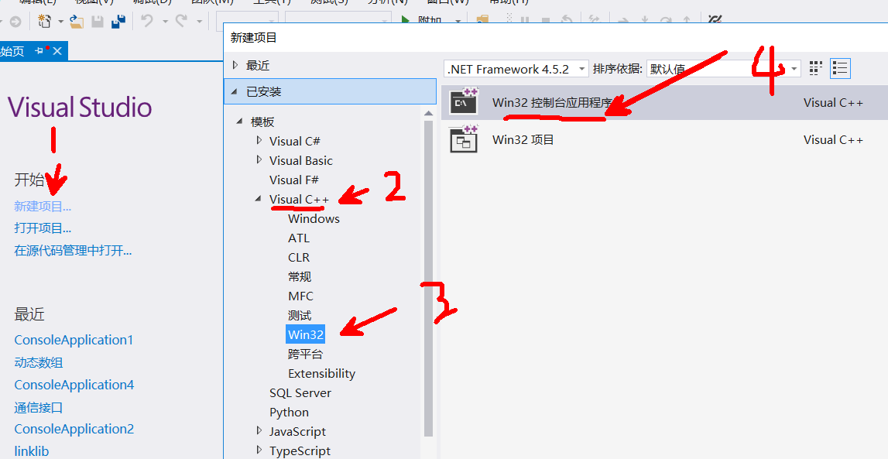

1 vs写代码



2 文本编辑器写代码
a> 用notepad++写源代码
b> 找到编译器应用程序- gcc

c> 如果想让计算机能够命令执行gcc，必须让计算机能够找到gcc可执行程序（设置环境变量PATH）


那么这个时候gcc编译器就可以使用：
3 使用gcc 编译代码 一步编译完成
windows命令：
cls : 清屏
dir： 查看当前 目录下的文件
在需要编译文件的文件夹下打开cmd终端，这个时候cmd默认目录在需要编译文件的文件夹下
编译：

gcc 编译 hello.c -o生成的目标（可执行文件） 名字为 world
执行：

3 c语言的编译步骤
预处理
带#的语句就是预处理指令，预处理指令在预处理的时候处理了
头文件展开： #include <stdio.h> 包含文件stdio.h（预处理时将stdio.h 文件拷贝至预处理文件中）
删除注释： 注释有两种方法： // /* */
宏替换： #define 代表是声明一个宏， 在预处理时会将宏给替代
预处理时 不会检查语法错误
条件编译： 条件不成立： #if 0 -> #endif 条件成立 #if 1 -> #endif
编译
将预处理文件编译生成汇编文件
检查语法错误
汇编
将汇编文件编译生成二进制文件.o
链接
设置运行环境，堆栈等，链接其他库
4 helloworld程序的解释：
//# 预处理指令，在预编译时处理
//#include <stdio.h> 包含stdio.h文件 stdio.h类似于菜单
// 两个斜杠是注释
//符号与（）结和代表这个是一个函数
//main() main函数也叫主函数 整个程序中仅且只有一个main函数，程序从main函数
//开始执行
//int 代表main函数结束之后的返回值类型
//return 结束这个函数，然后返回值，返回值的类型和函数定义时返回值类型一致
//{}里面的是函数体，所有需要执行的代码必须写在{}中
//每一条代码必须以分号；结尾
//printf是一个库函数，printf+（）就是函数调用
#include <stdio.h>
int main()
{
printf("hello world\n");//打印到终端
return 0;
}
5 system 库函数
作用： 在程序中启动另一个程序
参数：要的是待启动程序的路径名
#include <stdio.h>
#include <stdlib.h>
int main()
{
//syetem启动程序，如果这个程序系统可以找到，不用加路径，
//如果环境变量找不到，需要加路径
//windows路径以\\ 或 /
//system("mspaint");//启动画图板
//system("C:\\Users\\Administrator\\Desktop\\c++13\\hello.exe");
system("C:/Users/Administrator/Desktop/c++13/hello.exe");
printf("hello worldfbahfoahfoooooooooooooooooooooo\n");//打印到终端
return 0;
}
6 寄存器 缓存 cpu 内存之间的关系
cpu > 寄存器 > 缓存 > 内存

7 vs 中C语言嵌套汇编

8 vs出现4996警告编号
只需要在文件的最前面加上一句话：
两者选其一
#define _CRT_SECURE_NO_WARNINGS //这个宏定义最好要放到.c文件的第一行
#pragma warning(disable:4996) //或者使用这个
9 数据类型：
作用： 告诉编译器我这个数据在内存中需要多大的空间
常量： 程序运行中不能改变的量
整型常量： 1 200
字符常量： ‘a’
字符串常量 “hello”
浮点型常量： 3.14
变量：程序运行中可与被改变的量，存在于内存中
变量需要定义:
定义： 在内存中开辟空间 告诉编译器我有这个变量（声明）
变量的定义形式：
数据类型 变量名
int 类型 在内存中占 4字节
short 类型 2字节
long 类型 在windows 4字节 ，linux 32位4字节，64位8字节
char 类型 1字节
float 类型 4字节，一般用来存小数
double 类型 8字节，用来存小数
例子：
int a： //在内存中定义了一个变量a，占int类型大小4字节
char b： //在内存中定义了一个变量b，占char类型大小1字节
定义：在内存开辟空间
初始化： 定义时赋值
声明： extern 告诉编译器有这个东西，但是这里不开辟空间
#define _CRT_SECURE_NO_WARNINGS
#include<stdio.h>
#include<string.h>
#include<stdlib.h>
#define MAX 10//定义了一个宏（常量） 值为10
int main()
{
//变量取名 不能为关键字
//定义的本质是在内存开辟空间，给这个空间取名
//定义变量名时 变量名必须以字符和下划线开头，不能以数字开头
//初始化： 在定义时赋值
int num =200;//定义变量并且初始化
// int 8fg; err
char abc_def;
//extern 告诉编译器我有这个变量，（没有定义） 声明
extern short SUM;//声明变量SUM 并没有开辟空间
// SUM = 200000; err
// num = 100;
printf("num=%d\n",num);
//MAX = 100; MAX是一个常量，常量不可以被更改
system("pause");
return 0;
}
10 const修饰的变量
//const修饰的变量
int main()
{
//const 修饰的变量不能被更改
const int a;//const修饰的变量a, 不能通过变量名a去修改变量a的内容
// a = 10;
printf("a=%d\n",a);
system("pause");
return 0;
}
11 进制
十进制： 逢十进一 0-9
二进制： 逢二进一 0-1
八进制： 逢八进一 0-7
十六进制： 逢16进一
12 二进制
注意： c语言中不可以书写二进制
0和1组成
一个二进制的0或者1代表1位（bit）
8位就是一个字节
二进制加法：
0101
1001
+ 1110
二进制减法：
1101
1001
-
0100
十进制转二进制：

二进制转十进制

13 八进制
逢八进一
0 -7
c语言中书写八进制： 0123
十进制转八进制：
53

八进制转十进制：

八进制转二进制：
257转二进制：
因为八进制的最大值就是7，而7 用三位二进制就可以表示，所以我们用三个二进制表示一个八进制
因为八进制的最大值就是7，而7 用三位二进制就可以表示，所以我们用三个二进制表示一个八进制
257
010 101 111
二进制表示八进制：
001 101 010 101 010 101 111
1 5 2 5 2 5 7